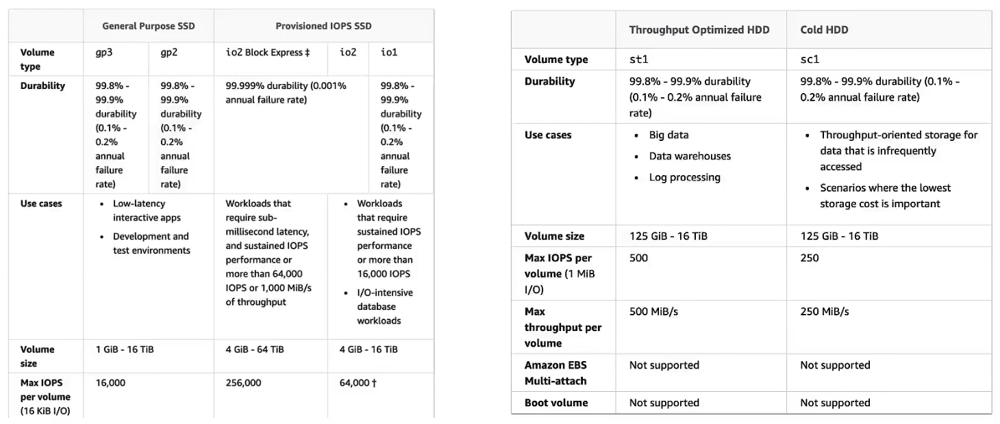
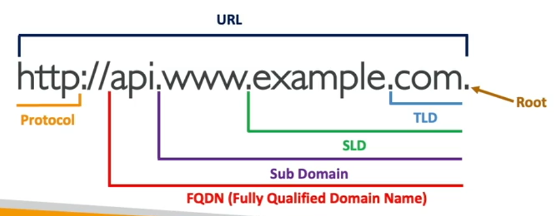

AWS
AWS
Global Services
- Identity and Access Management (IAM)
- Route 53 (DNS service)
- CloudFront (Content Delivery Network)
- WAF (Web Application Firewall)
Region-scoped
- Amazon EC2 (Infrastructure as a Service)
- Renting virtual machines (EC2)
- Storing data on virtual drives (EBS)
- Elastic File System (EFS)
- Distributing load across machines (ELB)
- Scaling the services using an auto-scaling group (ASG)
- Elastic Beanstalk (Platform as a Service)
- Lambda (Function as a Service)
- Rekognition (Software as a Service)
Concepts
- RDS Multi-AZ = Synchronous = High Availability
- Read Replica = Asynchronous = Disaster Recovery (DR)
IAM
which aws
aws --version
aws configure
aws iam list-usersSection 7: EC2 Instance Storage
EBS

General Purpose SSD, gp2, gp3
- gp3: IOPS and throughput are not linked.
- gp2: IOPS and throughput are linked.
Provisioned IOPS (PIOPS) SSD, io1/io2
- Use Case:
- Critical business applications with sustained IOPS performance.
- Or applications that need more than 16000 IOPS
- Great for database workloads(sensitive to storage perf and consistency)
- PIOPS and storage size are not linked just like gp3
Hard Disk Drives(HDD), st1, sc1
-
cannot be boot volume
-
Throughput Optimized HDD(st1)
- Big Data, Data Warehouses, Log Processing
-
Cold HDD(sc1)
- For data that is infrequently accessed
EBS Multi-Attach - io1/io2 family
- attach the same EBS volume to multiple EC2 instances in the same AZ
- Up to 16 EC2 instances at a time.
EBS Encryption
- create snapshot
- copy snapshot && encrypt snapshot
- create volume from snapshot && encrypt volume
EFS
- EFS works with EC2 instances in multi-AZ
Section 8: High Availability and Scalability: ELB & ASG
Section 9: AWS Fundamentals: RDS + Aurora + ElastiCache
Section 10: Route 53
- Domain Registrar: Amazon Route 53, GoDaddy, …
- DNS Records: A, AAAA, CNAME, NS, …
- Zone File: contains DNS Records
- Name Server: resolves DNS queries (Authoritative or Non-Authoritative)
- Top Level Domain (TLD): .com, .us, .in, .gov, .org, …
- Second Level Domain (SLD): amazon.com, google.com, …

- DNS SOA(Start of Authority) record
How DNS works
Section 11: Classic Solutions Architecture Discussions
Section 12: Amazon S3 Introduction
Section 13: Advanced Amazon S3
Section 14: Amazon S3 Security
Section 15: CloudFront & AWS Global Accelerator
Section 16: AWS Storage Extras
Section 17: Decoupling applications: SQS, SNS, Kinesis, Active MQ
Section 18: Containers on AWS: ECS, Fargate, ECR & EKS
Section 19: Serverless Overviews from a Solution Architect Perspective
Section 20: Serverless Solution Architecture Discussions
Section 21: Databases in AWS
Section 22: Data & Analytics
Section 23: Machine Learning
- Rekognition: face detection, labeling, celebrity recognition
- Transcribe: audio to text
- Polly: text to audio
- Translate: translations
- Lex: build conversational bots - chatbots
- Connect: cloud contact center
- Comprehend: NLP
- SageMaker: ML for every developer and data scientist
- Forecast: build high accurate forecasts
- Kendra: ML-powered search engine
- Personalize: real-time personalized recommendations
- Textract: extract text from file
Section 24: AWS Monitor & Audit: CloudWatch, CloudTrail & Config
Section 25: Identity and Access Management(IAM) - Advanced
Section 26: AWS Security & Encryption: KMS, SSM Parameter Store, Shield, WAF
Section 27: Networking - VPC
- Gateway VPC endpoints: Amazon S3 and DynamoDB, with route we don’t need public IP addresses
- Interface VPC endpoints: are used by all the other services that are becoming available inside our VPC.
- PrivateLink: we can use this to share our services with thousands of other VPCs.